Research · Fall 2025 · Course paper, rebuilt and re-analysed
What nuclear power does for electric propulsion
An audit and rebuild of a course paper on nuclear electric propulsion: what a fission reactor really enables, mission by mission and decade by decade.

- 3.0 yrcorrected 10 km/s transfer at 100 kWe (the paper printed 0.85)
- 64 kWefor an 8 t Mars cargo in 450 days with 2030s technology
- 2039earliest Mars cargo launch window, set by a reactor ground test, not by mass
- 44errors found in the original, 7 of them critical
A 2025 SPC 536 paper I co-wrote claimed that a 100 kWe reactor makes a 5 t Mars cargo in 200 days possible. When I went back to it I found 44 errors. I reproduced the original exactly, corrected it, and replaced its constant-mass estimates with a trajectory simulation, a SMAD-style spacecraft design and an optimal-control solver, all run on one common set of inputs.
01What the original got wrong
The paper's headline table printed 0.85 years for a 10 km/s transfer at 100 kWe; its own equation gives 3.16, and the corrected rocket-equation answer with power-processing losses is 3.0. The 200-day Mars cargo cannot close at all: it would need an initial acceleration of 6.3e-4 m/s² and more than half the launch mass as propellant. Its RTG mission could never finish, and the asymptotes in its Fig. 8 are 112 and 130 days, not 150 and 250.

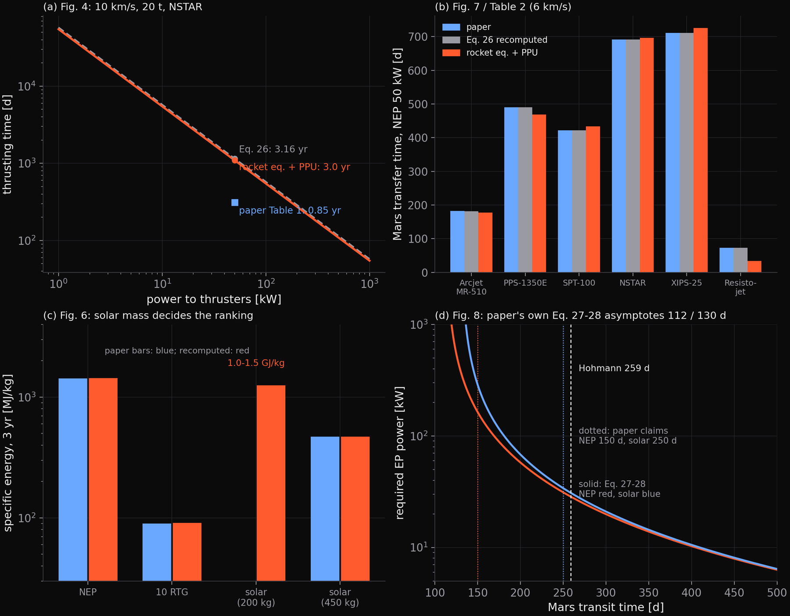
02Power is the whole story
Electric thrusters are efficient but power-starved, so the question I set out to answer is how much power each source delivers per kilogram, at each distance from the Sun. At equal power-system mass, fission overtakes solar beyond 2.3 AU with 2020s parts, 1.4 AU with 2030s parts and 1.1 AU with 2040s parts. On the same Mars mission, nuclear arrives in 362 days, solar-electric in 393, and an RTG craft cannot brake: it arrives 2.8 km/s too fast.

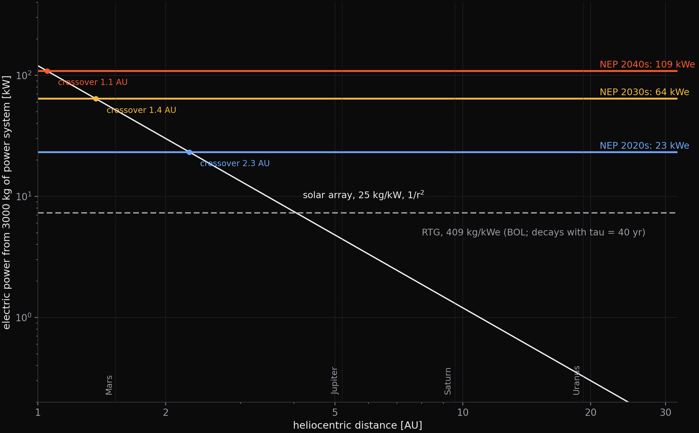
03Flying the missions
I flew each mission with an optimal-control solver that chooses the thrust direction and when to coast, with power that changes with distance from the Sun and a craft that gets lighter as it burns propellant. The simpler burn-coast-burn trajectories I used first are 3 to 46% slower than optimal for the same propellant. The model is planar with circular planet orbits and no ephemerides, so the trip times are upper bounds, not a launch-date plan.

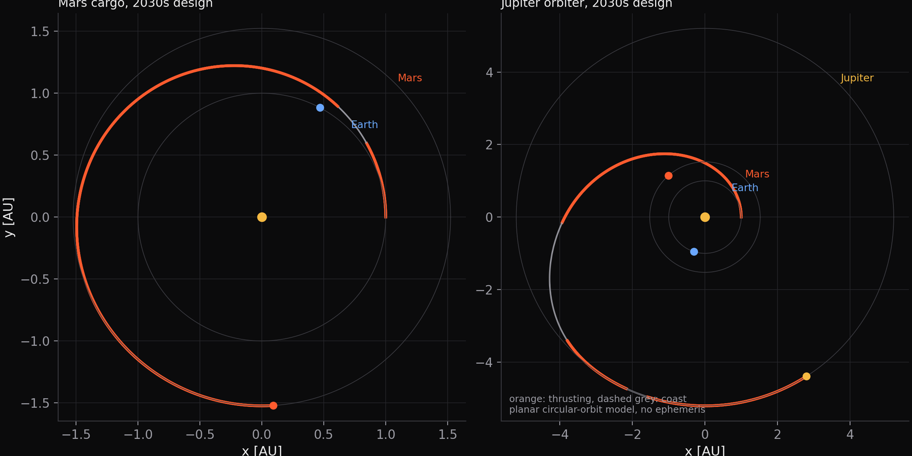

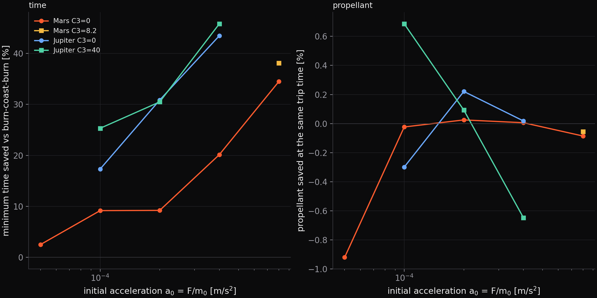
04Mission by mission, decade by decade
The first rebuild scored each mission with one label per decade, and it produced a result that made no sense: a mission could be 'possible' in the 2030s and only 'marginal' in the 2040s, because the lighter 2040s parts were newer and so less ready. I split the verdict into two questions. Does the design close technically (probability of closure at least 0.8 closes, at least 0.5 is low margin)? And when is the earliest it could launch, given the reactor ground test, a real-time converter life test of the mission's full-power hours, a launch vehicle and integration? Closure is now forced to improve or stay the same as technology improves, and the code checks it.
- Mars cargo, 8 t in 450 days: closes in every state (95 kWe and 24.9 t with 2020s parts, 64 kWe and 16.9 t with 2030s parts). Earliest launch is the August 2039 window, set by a reactor and shield ground test around 2034.
- Jupiter orbiter, 1.5 t in 6 years: low margin with 2020s parts, closes with 2030s parts at 45 kWe and 9.4 t. Earliest launch 2041, set by a 70,000-hour converter life test.
- Uranus orbiter, 1 t in 10 years: does not close with 2020s parts, low margin at 105 kWe in the 2030s state, closes at 85 kWe in the 2040s state. Earliest launch 2045 at low margin or 2051 to close, set by a 105,000-hour life test.
The launch years rest on development durations I assumed (start in 2027, test lengths, integration), so they are not forecasts. Halving or lengthening the required test hours moves them by about −3 to +6 years. Every NEP stack is heavier than one Falcon Heavy can lift, so each needs SLS Block 1B or a refuelled Starship. My two models, the trajectory simulation and the SMAD-style design, agree on the technical closure of every cell except Mars with 2020s parts.

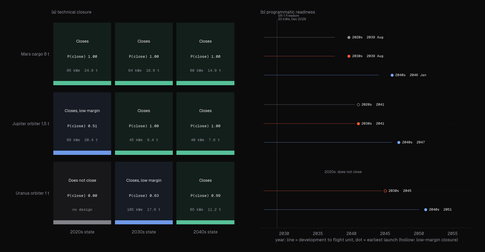

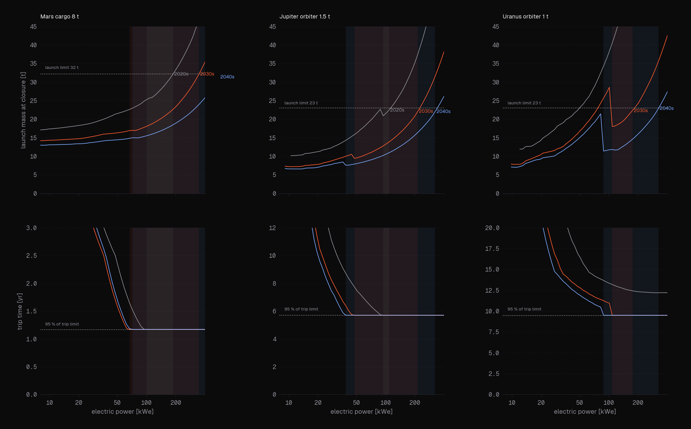

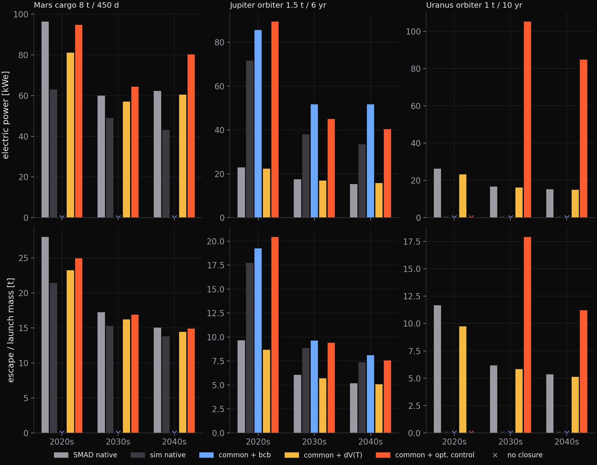

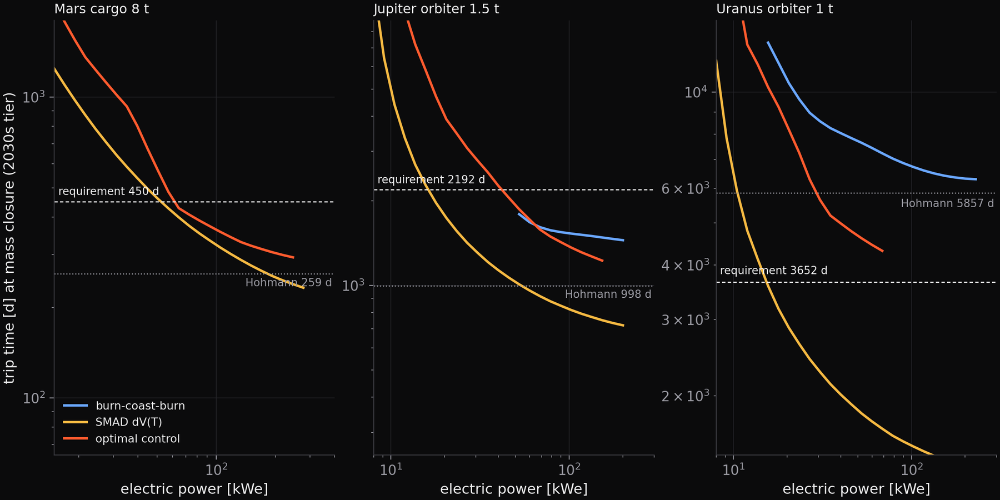
05Against what flies today
A verdict of 'closes' only matters against what could be done instead, so I put each NEP design next to the best current alternative, sized with the same launch-vehicle model and capture orbit.
- Mars: one Falcon Heavy on a chemical Hohmann transfer puts 6.8 t into the same orbit in 259 days. NEP delivers 8 t in 428 days but needs a 16.9 t stack on SLS or a refuelled Starship. At Mars, the case for NEP is a reusable tug and 64 kWe of power on arrival, not speed.
- Jupiter: Europa Clipper takes 5.5 years on about 700 W. NEP takes 5.7 years with 45 kWe and puts 6 t dry into a circular 30 Jupiter-radius orbit, where chemical propulsion would leave 0.5 t. I estimate it at $6.2 billion (P10 to P90: 4.5 to 8.6) against Clipper's $5.2 billion.
- Uranus: a solar-electric mission on a Falcon Heavy (3 to 4.2 t in 12 to 14 years, launching 2035 to 2040) arrives about a decade before NEP could. NEP's advantage at Uranus is power. With 85 to 105 kWe instead of about 550 W, the mission's 51.9 GB comes home in 192 hours of 34 m Deep Space Network time instead of 5,915.
The animations fly the 2030s NEP trajectory against chemical transfers on the same planar model.

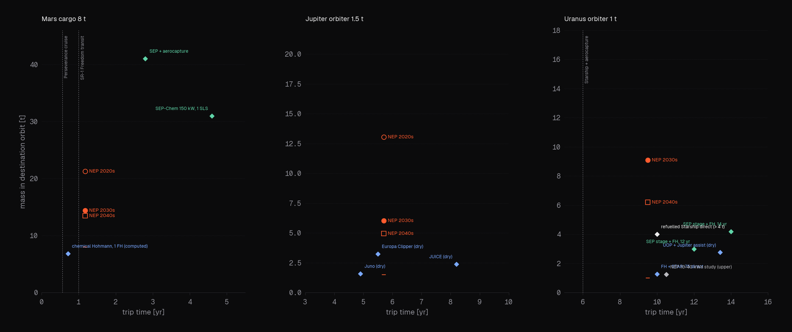

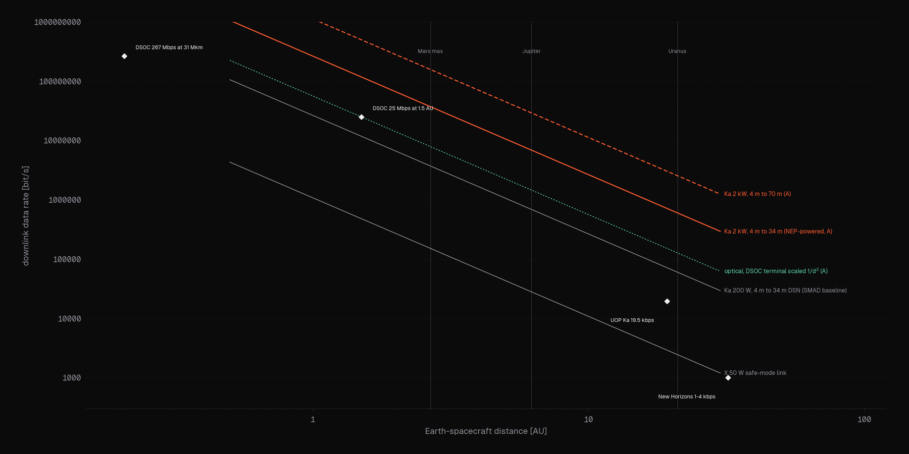
06The spacecraft, subsystem by subsystem
The 2025 paper stopped at power and trip time. For v3 I went through the SMAD subsystem chapters for each design point.
- Power: on the 2030s Mars design, 372 kW of reactor heat becomes 73.5 kW from the Brayton converter, 59.9 kWe on the bus, 57.7 kW into the power processors and 34.9 kW in the jet, about 9% of the reactor heat.
- Thermal: the radiator rejects 299 kW at 540 K, 3.0 kW per m², on 98 m². In the 2040s state it runs at 640 to 700 K, 6.3 to 9.1 kW per m², on 34 m².
- Communications: 2 kW of Ka-band on a 4 m dish gives 602 kbit/s at Uranus, 6.9 Mbit/s at Jupiter and 37 Mbit/s at Mars's maximum range. An optical terminal like DSOC, scaled with distance, gives 128 kbit/s at Uranus.
- Reliability: these are the most that the test evidence can demonstrate at 60% confidence, not predicted failure rates. With one 51,184-hour NEXT thruster test, the thruster strings need 3, 6 and 13 spares to reach 0.9, or one to two with ten test units. Demonstrating a converter reliability of 0.9 needs 8.7 times the mission hours of failure-free testing.
- Sensitivity: on the 2030s designs, the Mars payload moves by ±14% and the Jupiter power-system mass by −13 to +14%. The Uranus design loses closure with 20% more power-system mass or a 10% shorter trip limit.
- Cost (low confidence): fitting Dawn, Psyche, Juno, the Uranus study and Clipper, plus an assumed nuclear adder, gives $5.7 billion for Mars, $6.2 billion for Jupiter and $8.1 billion for Uranus in the 2030s state.

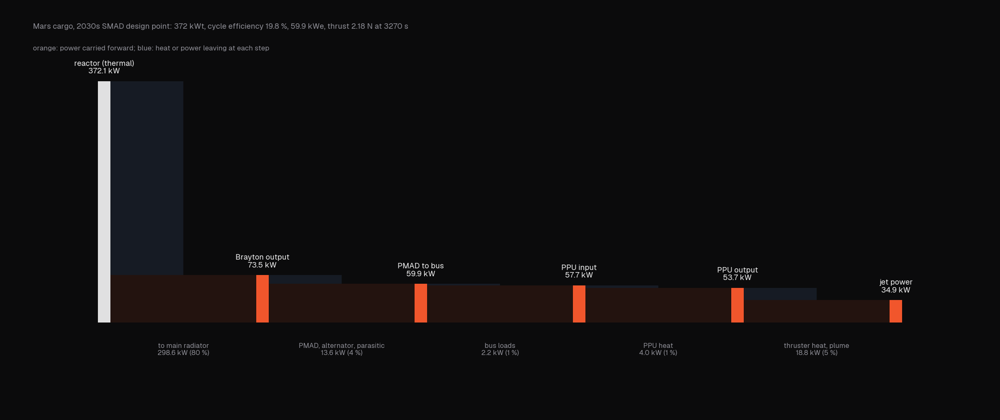

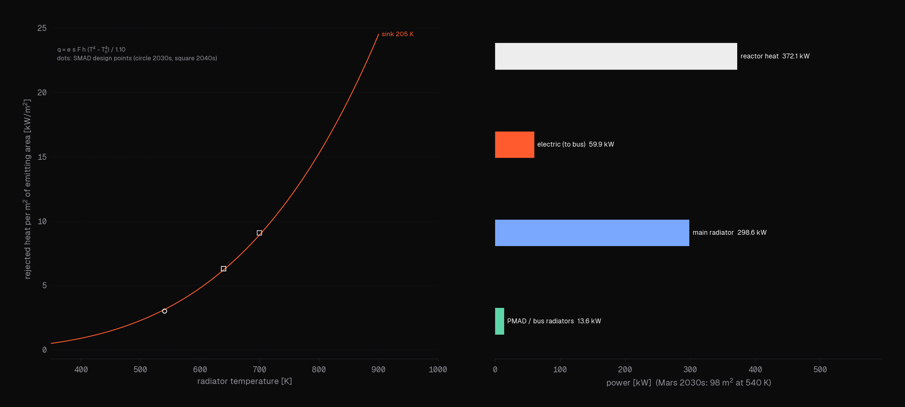

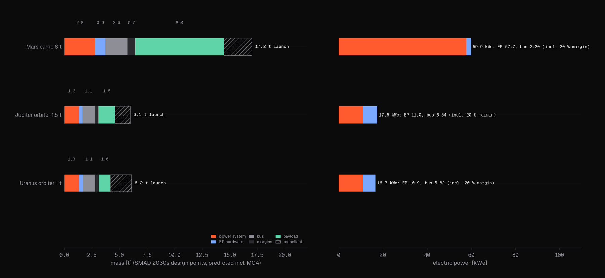

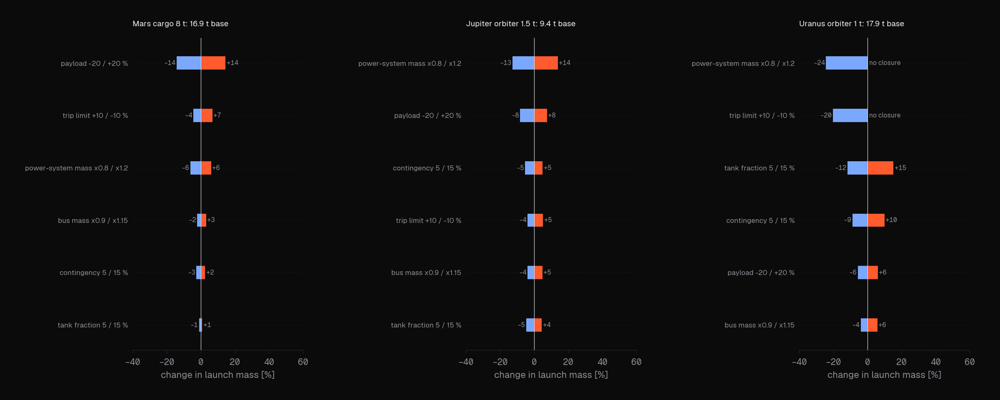

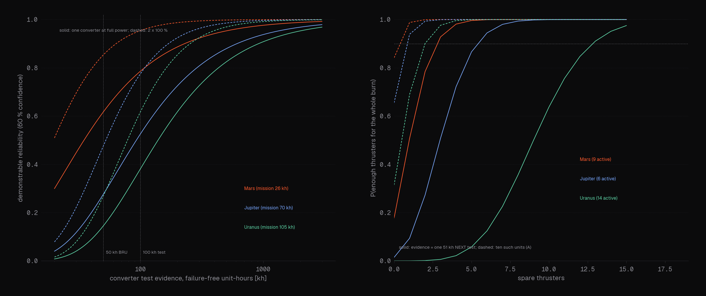

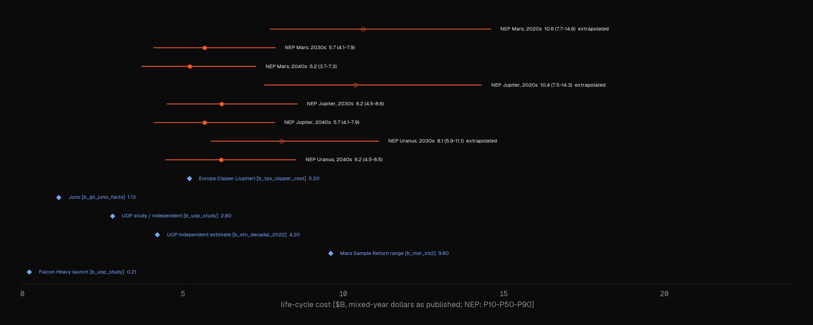
07Heat, mass and the right Isp
Every watt of electricity leaves several watts of waste heat to radiate. The power-system mass has a shallow minimum near a 550 K radiator for Brayton conversion, and the best specific impulse rises as the power system gets lighter. Mass is dominated by the power system and propellant; the launch vehicle, not the spacecraft, is the nearest failure in most cases.

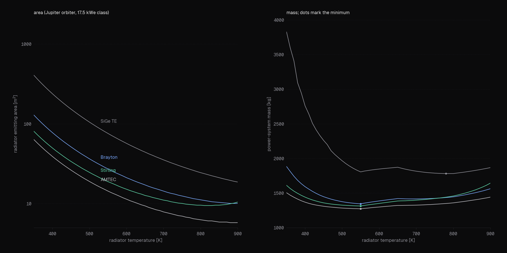

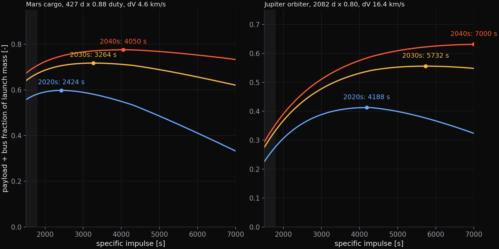

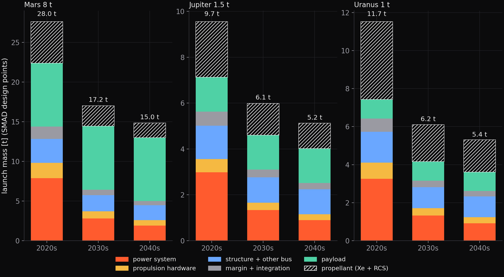
08New ideas that held up
I tested each design idea with a paired Monte Carlo against the baseline. The ones I kept: using the xenon tank as a gamma shield (4 to 10% less launch mass), a carbon-fibre radiator (15% on Mars), radiation-hardened avionics, reusing power-electronics heat, a peak-shaving battery and tank staging. A liquid-droplet radiator and 1500 K Brayton conversion help on paper but are at readiness level 3, so they are research options only. Most of these have precedent in the literature, so what I add is the quantification.

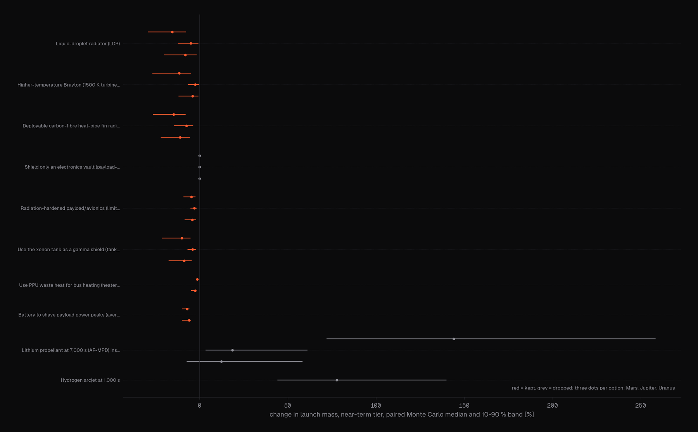

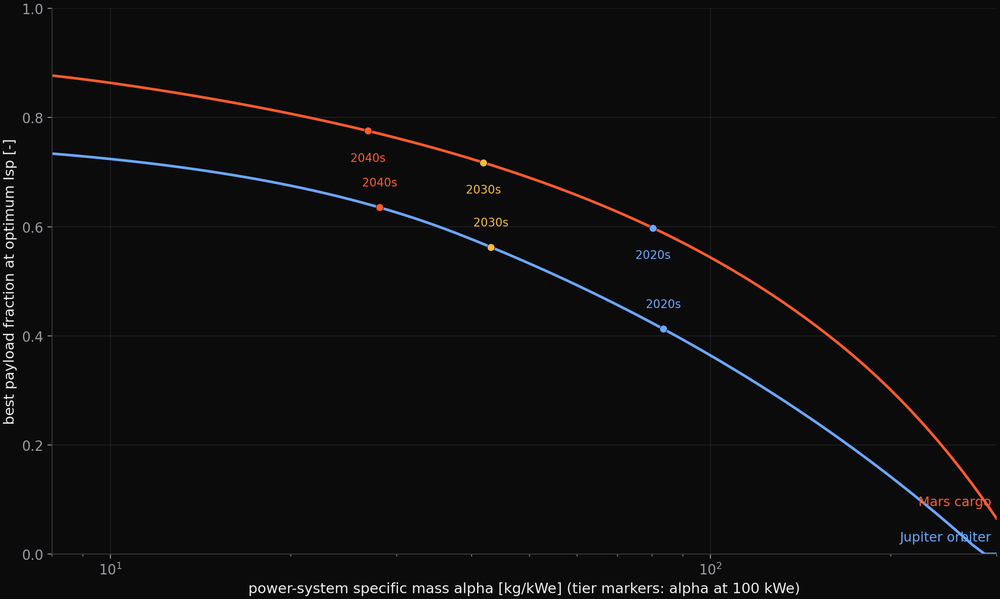
09What would have to be built
The launch dates are set by readiness, not by mass. The gating items are a reactor and shield ground test to readiness level 6 and a converter life test run in real time for the mission's full-power hours. The most important real-world change since the 2025 paper is NASA's SR-1 Freedom, a 20 kWe reactor demonstrator aimed at a December 2028 launch. If it flies, it is the first nuclear electric flight since SNAP-10A in 1965. The 2030s and 2040s technology states are still milestones I assumed, each with a stated development plan, not forecasts.

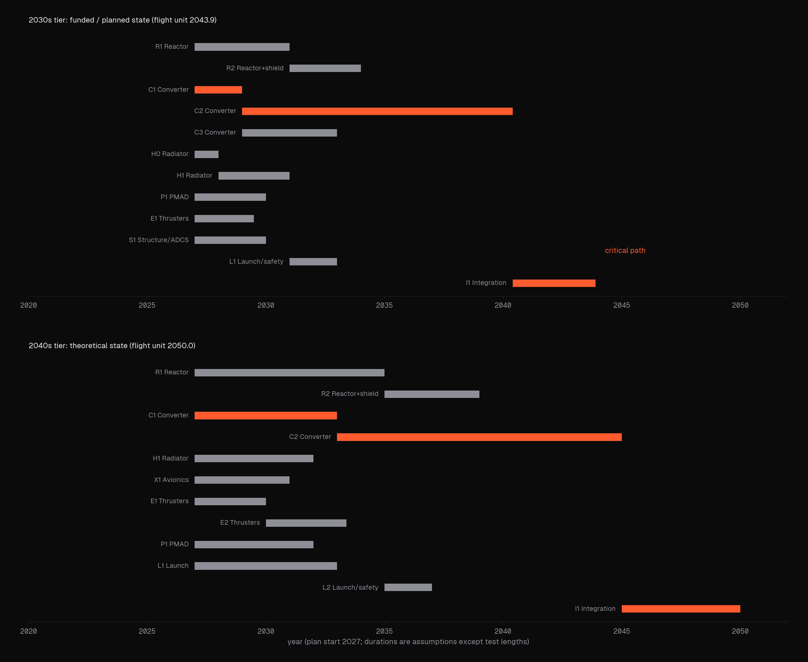

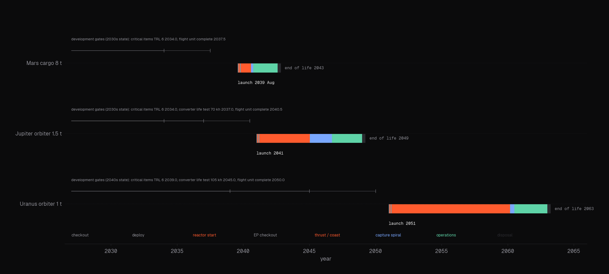
10Limits and honesty
I also found and withdrew my own errors along the way: an earlier result of mine that Mars closes in every era came from trajectory-table points that had failed and were silently filled, and the design study's Jupiter case under-counted capture by about 6.7 km/s. Trip times are upper bounds and global optimality is not proven. Uranus results move by -11 to +14% for a 5% change in propellant fraction, and the Jupiter and Uranus answers depend on how capture and transfer are defined. The Uranus rows use a direct planar transfer; studies with gravity assists reach Uranus on 7 to 30 kWe, so those rows are conservative. Starship refuelling, which I assumed operational by 2030, and SLS availability are both open.